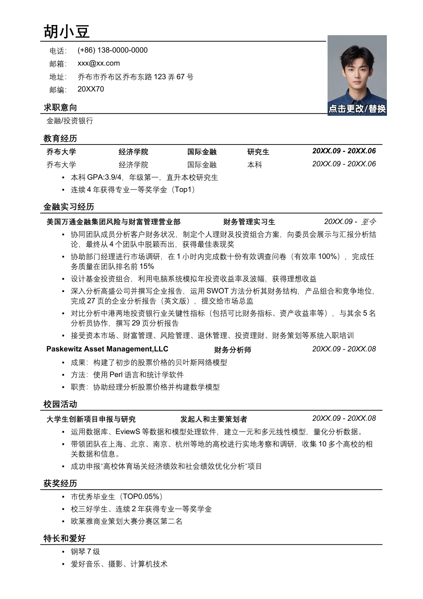

胡小豆
电话：
(+86) 138-0000-0000
邮箱：
xxx@xx.com
地址：
乔布市乔布区乔布东路
123
弄
67
号
邮编：
20XX70
求职意向
金融
/
投资银行
教育经历
乔布大学
经济学院
国际金融
研究生
20XX.09 - 20XX.06
乔布大学
经济学院
国际金融
本科
20XX.09 - 20XX.06
•
本科
GPA:3.9/4
，年级第一，直升本校研究生
•
连续
4
年获得专业一等奖学金（
Top1
）
金融实习经历
美国万通金融集团风险与财富管理营业部
财务管理实习生
20XX.09 -
至今
•
协同团队成员分析客户财务状况，制定个人理财及投资组合方案，向委员会展示与汇报分析结
论，最终从
4
个团队中脱颖而出，获得最佳表现奖
•
协助部门经理进行市场调研，在
1
小时内完成数十份有效调查问卷（有效率
100%
），完成任
务质量在团队排名前
15%
•
设计基金投资组合，利用电脑系统模拟年投资收益率及波幅，获得理想收益
•
深入分析高盛公司并撰写企业报告，运用
SWOT
方法分析其财务结构，产品组合和竞争地位，
完成
27
页的企业分析报告（英文版），提交给市场总监
•
对比分析中港两地投资银行业关键性指标（包括可比财务指标、资产收益率等），与其余
5
名
分析员协作，撰写
29
页分析报告
•
接受资本市场、财富管理、风险管理、退休管理、投资理财、财务策划等系统入职培训
Paskewitz Asset Management,LLC
财务分析师
20XX.09 - 20XX.08
•
成果：构建了初步的股票价格的贝叶斯网络模型
•
方法：使用
Perl
语言和统计学软件
•
职责：协助经理分析股票价格并构建数学模型
校园活动
大学生创新项目申报与研究
发起人和主要策划者
20XX.09 - 20XX.08
•
运用数据库、
EviewS
等数据和模型处理软件，建立一元和多元线性模型，量化分析数据。
•
带领团队在上海、北京、南京、杭州等地的高校进行实地考察和调研，收集
10
多个高校的相
关数据和信息。
•
成功申报“高校体育场关经济绩效和社会绩效优化分析”项目
获奖经历
•
市优秀毕业生（
TOP0.05%
）
•
校三好学生、连续
2
年获得专业一等奖学金
•
欧莱雅商业策划大赛分赛区第二名
特长和爱好
•
钢琴
7
级
•
爱好音乐、摄影、计算机技术